Examples
All examples follow the package import policy: bring each module in under a stable alias and qualify every call. Only a minimal set of names is exported at the top level (coarse_grain, coarse_grain!, coarse_grain_profile, CoarseGrainResult, the three kernels, plot_Π_map/plot_spectrum); everything else — filter_field!, compute_Π!, compute_Π_decomposed, tau_decomposition, tracer_variance_flux, backends, mask strategies, Spectral()/RealSpace() — is reached through its submodule (CGEF.Filtering..., CGEF.Diagnostics..., CGEF.ComputationalBackends...), never a flattened top-level re-export. Geometries and grid types come from FlowGeometries.jl.
using CoarseGrainingEnergyFluxes: CoarseGrainingEnergyFluxes as CGEF
using FlowGeometries: FlowGeometries as FGVisual Results
The coarse-graining pipeline
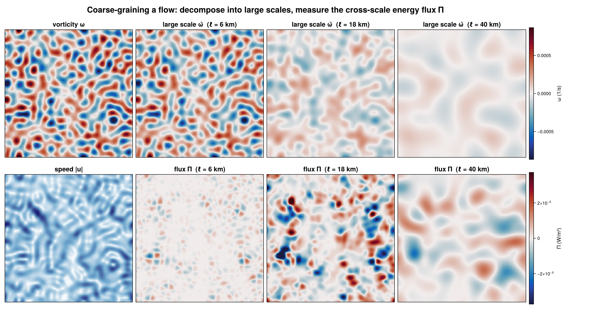
Spatial filtering across scales
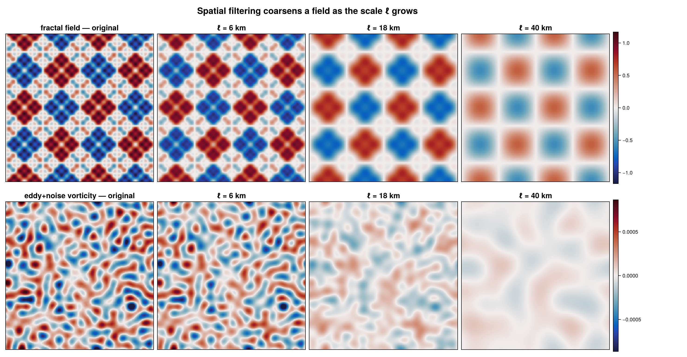
Filter kernels and spectral transfer
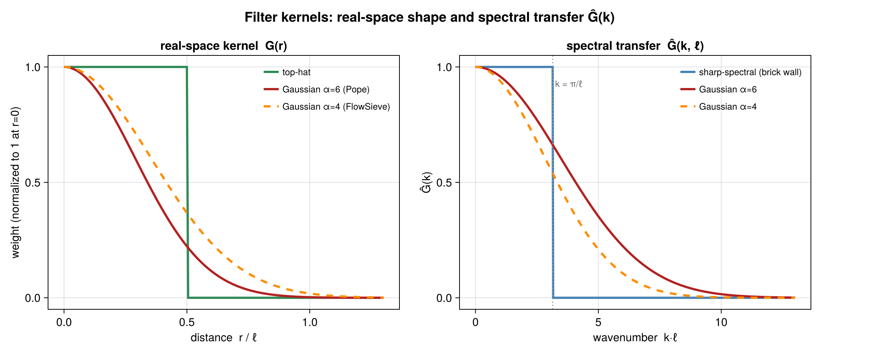
The filtering spectrum (recovers the Fourier slope)
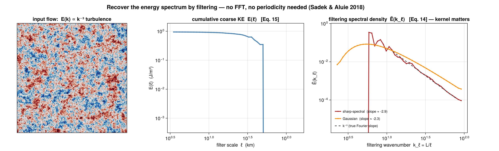
Rotational / divergent (Helmholtz) decomposition of Π
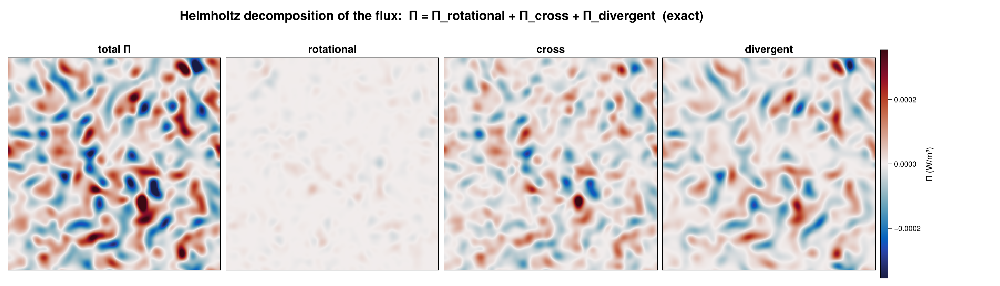
Cross-scale tracer / buoyancy-variance flux
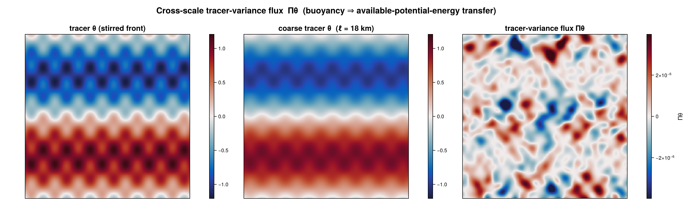
Masking: deformable vs zero-fill
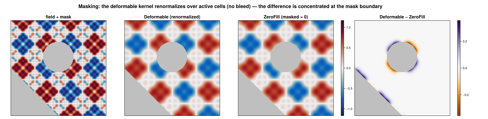
Spectral filtering on the sphere
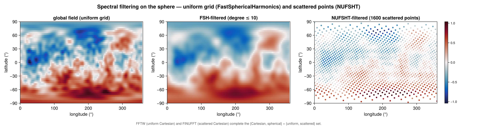
Validation: rigid-body rotation → Π = 0
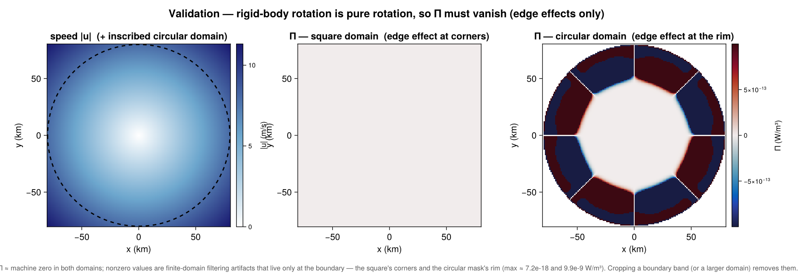
Curvilinear (model-native) grids
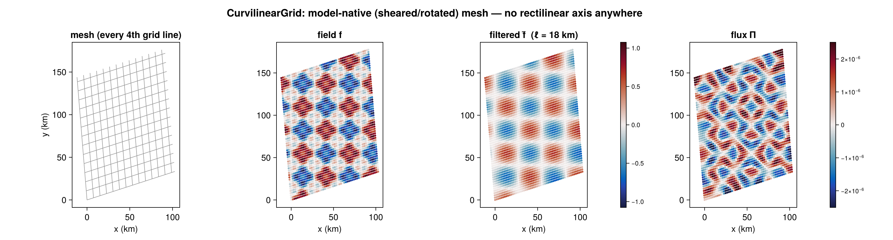
Scattered / unstructured point clouds
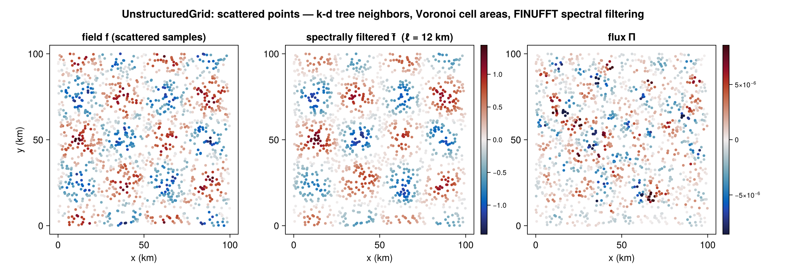
True 3D volumetric flux
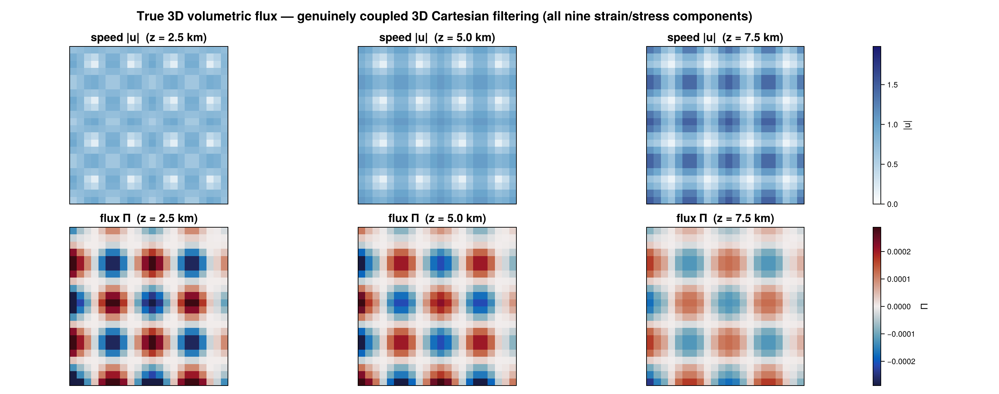
Vertical profile (2.5D per-level) vertical structure
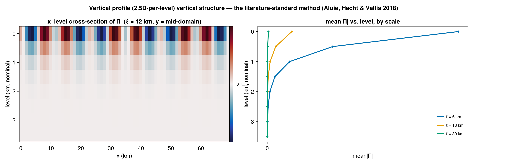
Cartesian domain — flux at one scale and across scales
using CoarseGrainingEnergyFluxes: CoarseGrainingEnergyFluxes as CGEF
using FlowGeometries: FlowGeometries as FG
dx = 1_000.0; N = 100 # 100 km × 100 km patch, 1 km spacing
geom = FG.Geometry.CartesianGeometry()
xs = collect(0.0:dx:(N - 1) * dx)
ys = collect(0.0:dx:(N - 1) * dx)
grid = FG.Grids.StructuredGrid(geom, xs, ys) # no mask ⇒ `AllActive`; see below to exclude cells
u = randn(N, N); v = randn(N, N) # replace with your data
# Π at a single 10 km scale.
Π = zeros(N, N)
CGEF.Diagnostics.compute_Π!(Π, u, v, nothing, grid, CGEF.TopHatKernel(), 10_000.0)
# Multi-scale sweep (plan reuse handled internally).
scales = collect(5e3:5e3:50e3)
result = CGEF.coarse_grain(u, v, grid; scales = scales, kernel = CGEF.TopHatKernel())
@view result.Π[:, :, 3] # flux map at scales[3] — result.Π is a stacked (Nx,Ny,Nscales) array
result.cumulative_energy # ½ρ₀⟨|ū_ℓ|²⟩ per scale (Sadek–Aluie Eq. 15)
result.wavenumber # k_ℓ = L/ℓ
result.filtering_spectrum # Ẽ(k_ℓ) density (Eq. 14)Spherical domain with a mask
using CoarseGrainingEnergyFluxes: CoarseGrainingEnergyFluxes as CGEF
using FlowGeometries: FlowGeometries as FG
geom = FG.Geometry.SphericalGeometry(6.371e6)
lon = deg2rad.(collect(0.0:0.25:359.75))
lat = deg2rad.(collect(-80.0:0.25:80.0))
grid = FG.Grids.StructuredGrid(geom, lon, lat) # full-circle lon ⇒ periodic auto-detected
# u, v = load_velocity(...)
scales = collect(10e3:10e3:300e3)
result = CGEF.coarse_grain(u, v, grid; scales = scales, kernel = CGEF.TopHatKernel())The Deformable mask strategy (default) renormalizes the kernel over active points near the mask boundary; pass mask_strategy = CGEF.Filtering.ZeroFill() to treat excluded cells as zeros instead.
Curvilinear (model-native) grids
CurvilinearGrid needs no rectilinear axis assumption at all — every point carries its own (x, y), and derivatives/filtering/Π all work directly off the 2D coordinate arrays via a per-point footprint and weighted-least-squares (WLSQ) gradients. A common source is a structured-grid ocean/atmosphere model's curvilinear cell-center grid; here's a synthetic sheared/rotated example:
using CoarseGrainingEnergyFluxes: CoarseGrainingEnergyFluxes as CGEF
using FlowGeometries: FlowGeometries as FG
N = 60; dx = 2_000.0
geom = FG.Geometry.CartesianGeometry()
i = collect(0.0:(N - 1)); j = collect(0.0:(N - 1))
θ = deg2rad(15.0); shear = 0.3 # rotate + shear a rectilinear index grid
x = [dx * (ii * cos(θ) - jj * shear * sin(θ)) for ii in i, jj in j]
y = [dx * (ii * sin(θ) + jj * (1 + shear * cos(θ))) for ii in i, jj in j]
grid = FG.Grids.CurvilinearGrid(geom, x, y) # exact corner-based cell areas, auto-reconstructed
u = randn(N, N); v = randn(N, N)
result = CGEF.coarse_grain(u, v, grid; scales = collect(10e3:10e3:60e3), kernel = CGEF.TopHatKernel())Scattered / unstructured point clouds
UnstructuredGrid is the full pipeline for genuinely scattered observations (moorings, drifters, along-track altimetry): k-d tree neighbor search and Voronoi cell areas at construction time, WLSQ gradients over that adjacency, and both filtering methods. Spectral() (FINUFFT/NUFSHT) is the default — exact for a band-limited field and O(n log n). Pass method = CGEF.Filtering.RealSpace() when the kernel must be applied exactly as written, e.g. near a boundary or a masked region, where a transform's global support is wrong.
using CoarseGrainingEnergyFluxes: CoarseGrainingEnergyFluxes as CGEF
using FlowGeometries: FlowGeometries as FG
using NearestNeighbors: NearestNeighbors # enables k-d tree neighbor search
using DelaunayTriangulation: DelaunayTriangulation # enables exact Voronoi cell areas (Cartesian)
using FINUFFT: FINUFFT # enables scattered-Cartesian spectral filtering
npts = 2_000
geom = FG.Geometry.CartesianGeometry() # a placeholder — UnstructuredGrid has no fixed spacing
x = 100_000.0 .* rand(npts)
y = 100_000.0 .* rand(npts)
grid = FG.Grids.UnstructuredGrid(geom, x, y; k = 8) # k-nearest adjacency + auto Voronoi areas
u = randn(npts); v = randn(npts)
Π = zeros(npts)
CGEF.Diagnostics.compute_Π!(Π, u, v, nothing, grid, CGEF.GaussianKernel(), 8_000.0)For scattered spherical observations, build grid with FG.Geometry.SphericalGeometry(R) instead and load Quickhull (Voronoi areas) and NUFSHT (spectral filtering) in place of DelaunayTriangulation/ FINUFFT.
True 3D volumetric flux (Cartesian and spherical)
Distinct from the vertical-profile method below: a true 3D StructuredGrid filters in all three directions with one kernel and computes the genuinely coupled 9-component strain/stress contraction — the right tool for homogeneous/isotropic turbulence, not the standard large-scale thin-layer level-stacking approach.
using CoarseGrainingEnergyFluxes: CoarseGrainingEnergyFluxes as CGEF
using FlowGeometries: FlowGeometries as FG
# Cartesian: (x, y, z) all uniform Range axes.
N = 24; dx = 500.0
geom = FG.Geometry.CartesianGeometry()
x = collect(0.0:dx:(N - 1) * dx); y = copy(x); z = copy(x)
grid = FG.Grids.StructuredGrid(geom, x, y, z)
u = randn(N, N, N); v = randn(N, N, N); w = randn(N, N, N)
Π = zeros(N, N, N)
CGEF.Diagnostics.compute_Π!(Π, u, v, w, grid, CGEF.TopHatKernel(), 5_000.0)
# Spherical volumetric shell: (lon, lat, radius); Nz ≥ 2 is required (else use the 2D constructor).
R = 6.371e6
sgeom = FG.Geometry.SphericalGeometry(R)
lon = deg2rad.(collect(0.0:2.0:358.0)); lat = deg2rad.(collect(-80.0:2.0:80.0))
r = collect((R - 2000.0):500.0:R) # 5 levels spanning the top 2 km
sgrid = FG.Grids.StructuredGrid(sgeom, lon, lat, r)Vertical profile (2.5D per-level) vertical structure
The literature-standard method (Aluie, Hecht & Vallis 2018): run the existing 2D/2.5D compute_Π! independently at each vertical level of a 3D (x, y, z) array and stack the profile — not to be confused with the coupled true-3D method above.
using CoarseGrainingEnergyFluxes: CoarseGrainingEnergyFluxes as CGEF
using FlowGeometries: FlowGeometries as FG
geom = FG.Geometry.CartesianGeometry()
N = 80; Nz = 6
xs = collect(0.0:1_000.0:(N - 1) * 1_000.0)
grid = FG.Grids.StructuredGrid(geom, xs, xs) # a 2D grid — z is a third array axis
u = randn(N, N, Nz); v = randn(N, N, Nz) # (x, y, z)
scales = collect(5e3:5e3:30e3)
result = CGEF.coarse_grain_profile(u, v, grid; scales = scales, kernel = CGEF.TopHatKernel())
result.Π[:, :, :, 3] # flux profile at scales[3], all Nz levels
result.cumulative_energy[:, 3] # per-level cumulative energy at scales[3]Execution backends (real-space RealSpace)
The backend only changes how the same footprint convolution is evaluated — results are identical. Every backend reuses a footprint/plan built once per (grid, kernel, scale), not rebuilt per call.
using OhMyThreads: OhMyThreads # enables ThreadedBackend (2D row-parallel + 1D/3D point-parallel)
result = CGEF.coarse_grain(u, v, grid; scales = scales, backend = CGEF.ComputationalBackends.ThreadedBackend())
using KernelAbstractions: KernelAbstractions # enables GPUBackend (2D grids only)
# Takes the device to run on — `KernelAbstractions.CPU()` here, `CUDABackend()`/`ROCBackend()` on a GPU.
result = CGEF.coarse_grain(u, v, grid; scales = scales,
backend = CGEF.ComputationalBackends.GPUBackend(KernelAbstractions.CPU()))
using MPI: MPI # enables MPIBackend (2D grids; requires MPI.Init() first)
result = CGEF.coarse_grain(u, v, grid; scales = scales, backend = CGEF.ComputationalBackends.MPIBackend())
# AutoBackend (default) picks ThreadedBackend when Threads.nthreads() > 1, else SerialBackend.MPIBackend's real multi-rank behavior (round-robin row decomposition + Allreduce!) is only meaningfully exercised under mpiexec -n P; see test/mpi_runtests.jl for a runnable reference.
Spectral filtering (method = Spectral())
Spectral filtering multiplies by Ĝ(k) and is selected by the grid type (FFTW / FINUFFT / FastSphericalHarmonics / NUFSHT). It requires a homogeneous (periodic / global) domain, but a partial mask is supported — ZeroFill/Deformable work exactly as they do for RealSpace() (normalized convolution, evaluated in Fourier/spherical-harmonic space). GaussianKernel/SharpSpectralKernel work with no extra dependency; TopHatKernel needs using SpecialFunctions (for its exact planar Bessel-J₁ transfer function — the spherical-cap analog needs no extra dependency).
using FlowGeometries: FlowGeometries as FG
using FFTW: FFTW # uniform periodic Cartesian
N = 128; dx = 1.0
geom = FG.Geometry.CartesianGeometry()
x = collect(0.0:dx:dx*(N - 1))
grid = FG.Grids.StructuredGrid(geom, x, x; periodic = (true, true))
out = zeros(N, N)
CGEF.Filtering.filter_field!(out, u, grid, CGEF.GaussianKernel(), 4.0; method = CGEF.Filtering.Spectral())Scattered Cartesian points use FINUFFT on an UnstructuredGrid{Cartesian}; uniform spherical grids use FastSphericalHarmonics on a StructuredGrid{Spherical}; scattered spherical points use NUFSHT on an UnstructuredGrid{Spherical}. In every case the call is the same filter_field!(…; method = CGEF.Filtering.Spectral()) — only the grid type differs.
Rotational / divergent (Helmholtz) flux decomposition
Pass the rotational (solenoidal) velocity from a Helmholtz solver (HelmholtzDecomposition.jl); the divergent part is taken as the complement. Both the strain and the stress are split before contracting (see Theory), giving three exact channels rather than a one-sided approximation.
using CoarseGrainingEnergyFluxes: CoarseGrainingEnergyFluxes as CGEF
# u_rot, v_rot = HelmholtzDecomposition.rotational_part(u, v, grid)
dec = CGEF.Diagnostics.compute_Π_decomposed(u, v, u_rot, v_rot, grid, CGEF.TopHatKernel(), 20_000.0)
dec.total # == compute_Π! full flux
dec.rotational # Π_RR (rotational → rotational)
dec.cross # Π_X (every interaction / "stimulated cascade" term)
dec.divergent # Π_DD (divergent → divergent) dec.rotational .+ dec.cross .+ dec.divergent ≈ dec.totalThe true-3D Cartesian method has the same signature with w/w_rot added.
Tracer / buoyancy variance flux
# θ is any tracer (buoyancy b = -g ρ'/ρ₀ gives the APE-related transfer).
Πθ = CGEF.Diagnostics.tracer_variance_flux(u, v, θ, grid, CGEF.TopHatKernel(), 20_000.0)A true-3D method exists too (tracer_variance_flux(u, v, w, θ, grid, kernel, scale)). On a spherical grid the velocity is rotated to planetary Cartesian before filtering and the subfilter tracer flux rotated back to east/north(/radial), the same convention compute_Π! uses.
Stress decomposition (Leonard / Cross / Reynolds)
d = CGEF.Diagnostics.tau_decomposition(u, v, grid, CGEF.TopHatKernel(), 20_000.0)
d.L.xx; d.C.xy; d.R.yy # d.L + d.C + d.R == τ exactlyOn a spherical grid, xx/xy/yy are local east/north components (the moments are taken in planetary-Cartesian coordinates, then rotated back — see Theory).
Visualization (CairoMakie extension)
using CairoMakie: CairoMakie # provides plot_Π_map / plot_spectrum methods
result = CGEF.coarse_grain(u, v, grid; scales = collect(10e3:10e3:100e3))
fig1 = CGEF.plot_Π_map(result, 3, grid) # flux map at scales[3]
fig2 = CGEF.plot_spectrum(result; which = :density) # filtering spectral density Ẽ(k_ℓ)
fig3 = CGEF.plot_spectrum(result; which = :cumulative) # cumulative coarse KE vs ℓ